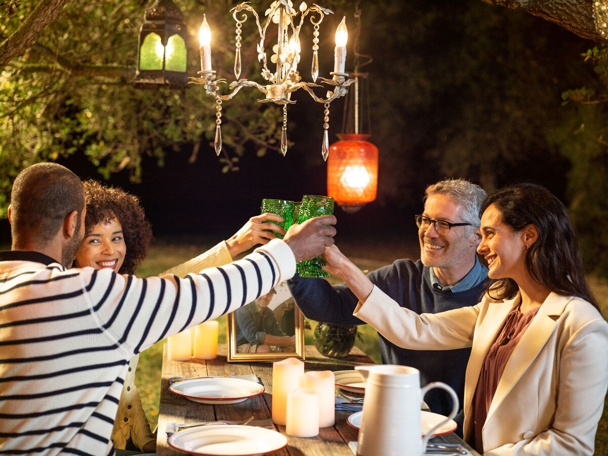
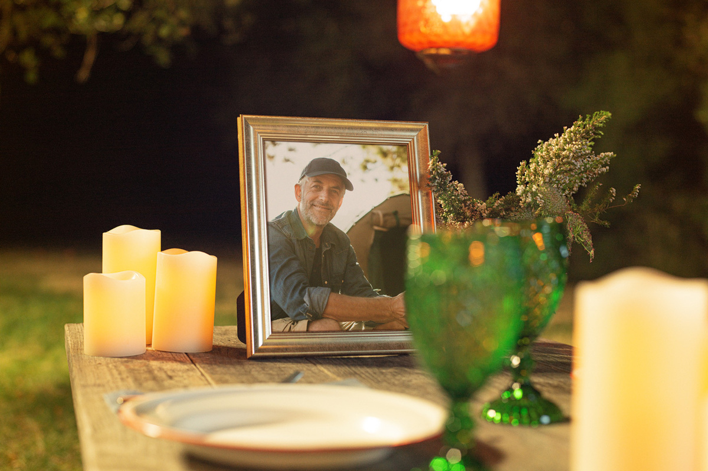
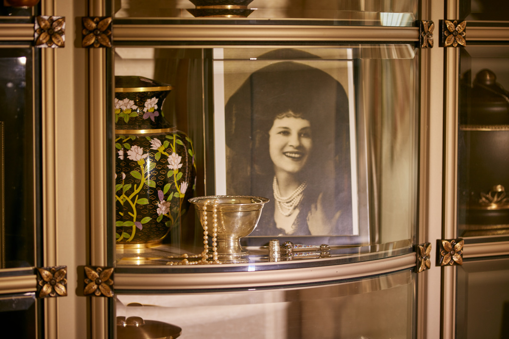

A memorial service is a way to honor and remember a person's life. Though most people are familiar with traditional funeral services, they may not understand all of the many options available when choosing cremation or the important aspects to consider when planning a cremation funeral. A cremation funeral service can include many of the same elements as a traditional funeral: flowers, music, readings, even a viewing.
If you have an immediate need to plan a cremation for a loved one, reach out to your local Dignity Memorial® provider. A professional planner or funeral celebrant can answer all your questions about cremation and cremation memorials and help you design a one-of-a-kind service for your loved one. If you're planning ahead, here are some things to think about.
There isn't a “right” time for a memorial service, and a cremation funeral or celebration of life can be held before or after the cremation itself.
When a funeral is held prior to cremation, the service can include a viewing, as with a traditional funeral. A viewing lets friends and family say a final goodbye. Holding a viewing before cremation will likely require embalming and the purchase or rental of a casket, which will impact the cost of arrangements.
When a funeral is held after cremation, ashes are usually present at the service in a cremation urn or other container. A family will often surround the urn with cherished photos and important keepsakes of the person being honored to create a focal point that helps guests reflect and celebrate.
Today's cremation funerals can be religious ceremonies or lively celebrations with themed decor, favorite foods and live music. Either way, they should reflect the personality and passions of the loved one being remembered. Here are a few ideas.
For the traditionalist: Plan a visitation and funeral service for friends and family at the funeral home prior to cremation. Follow up a few days later with a smaller committal service at the mausoleum where your loved one's ashes will be memorialized.
For the outdoors lover: Host a post-cremation lakeside party. Ask guests to dress casually and gather near the water for an afternoon of remembrance. Pallbearers can bring your loved one's urn to the gathering in the seat of a kayak. Guests can share stories of shared adventures.
For the cause advocate: Organize a memorial fundraiser after cremation to honor the legacy of your loved one and raise money and awareness for a cause near to their heart. Options include a walk-a-thon, auction or baked goods sale; donate funds raised to the cause of choice.
For the high flyer: There's nothing in the Federal Aviation Regulations to prohibit scattering ashes from an airplane—just don't toss out the container. Rent a plane and have friends and family gather either at your property or that of someone who's given you permission to watch and celebrate.
For the fan of simplicity: Even someone who liked to keep things simple can be honored with a moment of reverent reflection. If you choose simple cremation for yourself or your loved one, your Dignity Memorial provider can arrange a quiet time for a few family members to gather together to pick up a loved one's ashes.
There are no right or wrong ways to celebrate a life. Even simple details and personal touches make for a deeply meaningful memorial service. We can help you find inspiration and then help you decide how far to take it-just download our memorial inspiration guide to get started.
A cremation memorial can include all of the same elements as a traditional funeral or celebration of life.
Theme: A cremation funeral can be a no-frills event to match a pared-down personality or an extravagant affair to honor a passionate extrovert. What's important is that the service uniquely reflects the person's life. A funeral theme typically draws on a hobby or signature style . Was she a shoe lover? Was he a golf pro? Did she have a reputation as the city's best cookie baker? Did the whole town count on him to play Santa Claus for the kids? We've created funerals for world travelers and bookworms, equestrians and poets.
Event details: A cremation funeral can include readings of eulogies, religious verses, passages from literature and more. It can include a group sing-along, a conga line or an activity like hiking a favorite trail. Will it include a breakfast buffet? A cake-and-coffee reception? An outdoor barbecue? A formal dinner? A truly elaborate event can include fireworks, but personalization doesn't have to be over the top. You can honor a loved one with something as simple as a poem.
Location: Programming for the event influences where you hold the cremation funeral. The funeral home is a convenient choice, and most funeral homes today have space for catered receptions. In fact, some funeral homes have spaces that are as fine as a hotel ballroom or as sophisticated as a wine bar. A cremation funeral could also be held at a church, the family's home or someplace outdoors (your Dignity Memorial provider will know about necessary permitting).
Keepsakes: Many families want to give funeral attendees a token to represent the person being remembered. A bookmark or a recipe card, custom golf balls or key chains, a person's favorite candy or even a piece from a collection are all wonderful ways to let someone know you are touched that they attended the funeral and allow them a little something by which to remember their friend or family member.
Cremation has the benefit of more options for memorialization than traditional burial. You may even be surprised by all the choices.
Cemetery options include cremation burial, niches and scattering gardens (the choices vary from cemetery to cemetery), as well as pedestals, benches and statuary that hold ashes. Even families who opt to keep a loved one's ashes at home or scatter them someplace besides a cemetery may choose a marker at a cemetery so future generations have a place to visit and remember. Some Dignity Memorial providers offer families who choose cremation a complimentary cremation placement.
If a site in a cemetery doesn't appeal to your family, there are still plenty of ways to memorialize a loved one. Think about the activities or places that were significant to your person; these can provide inspiration for scattering. Consider planting a tree as a memorial or placing an engraved boulder at a special spot. You might purchase a bench or paver for a sidewalk. Let your loved one's life inspire you.
And finally, in addition to those options, custom cremation jewelry or other mementos, such as glass art, vinyl records, synthesized diamonds or even a tattoo, can turn a bit of ashes into a timeless keepsake.
No matter what choice your family makes, there's an opportunity to honor the life of your loved one with a ceremony memorializing the event. Even families who choose a cremation without a service might opt to host a small gathering at home once the ashes are returned or hold a scattering ceremony with a few close friends.
Talking About Funeral Arrangements